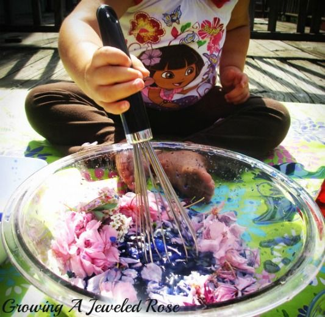

Flower Perfume
Return to Home

The Power of Flowers
Perfume is something that most kids enjoy smelling but aren't allowed to have. But everyone knows that
perfume smells like flowers and pretty things, so let's try making some with items we can find outside.
This recipe is wonderful to try on a beautiful summer day when the flowers are blooming and everyone
wants to play outside. Making perfume is like a treasure hunt.
Ingredients
- Bowl of Water
- Rose Petals
- Snowball Flowers
- Daisies
- Rosemary
- Pine Needles
- Additional Fragrant Items
Steps
- Place bowl of water outside and go through neighborhood to find next ingredients
- Gather rose petals from several different bushes. The bigger outer petals are best for smell and color
- Add the rose petals to the bowl
- Gather snowball flowers. If a large bunch is available, definitely pick it. Otherwise, small groupings will work fine
- Add the snowball flowers to the bowl
- Gather any other flowers that are in bloom and add to the bowl
- Pick some sprigs of rosemary from the neighbors herb garden
- Break off some pine needles from a large pine tree
- Add the rosemary and pine needles to the bowl
- Add any other additional fragrant items you find
- Stir the bowl's contents and allow to sit in the sun for one hour
- Pick out all of the flowers and other items from the water
- Smell the water. It probably won't smell like anything, so throw it away